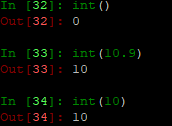
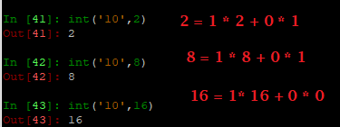

class int(x, base=10)
Return an integer object constructed from a number or string x, or return 0 if no arguments are given. If x defines __int__(), int(x) returns x.__int__(). If x defines __trunc__(), it returns x.__trunc__(). For floating point numbers, this truncates towards zero.
If x is not a number or if base is given, then x must be a string, bytes, or bytearray instance representing an integer literal in radix base. Optionally, the literal can be preceded by + or - (with no space in between) and surrounded by whitespace. A base-n literal consists of the digits 0 to n-1, with a to z (or A to Z) having values 10 to 35. The default base is 10. The allowed values are 0 and 2–36. Base-2, -8, and -16 literals can be optionally prefixed with 0b/0B, 0o/0O, or 0x/0X, as with integer literals in code. Base 0 means to interpret exactly as a code literal, so that the actual base is 2, 8, 10, or 16, and so that int('010', 0) is not legal, while int('010') is, as well as int('010', 8).
1 int() 2 int(10.9) 3 int(10)
 